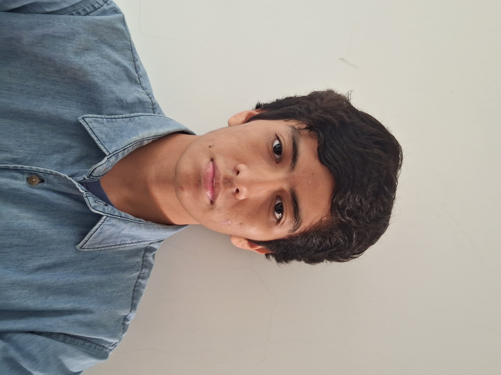

Josue Urquidi Carrillo
Registro: 223044571
Universidad: Universidad Autónoma Gabriel René Moreno
Carrera: Ingeniería de Sistemas
Semestre: 9no semestre
Materia: Tecnología Web SA
Grupo: Grupo 14
Perfil personal
Soy estudiante de Ingeniería de Sistemas de la Universidad Autónoma Gabriel René Moreno, actualmente cursando el 9no semestre. Me interesa el desarrollo de software, especialmente el desarrollo web moderno, la creación de APIs, bases de datos y aplicaciones escalables.
Tengo conocimientos en tecnologías frontend y backend, manejo de bases de datos relacionales y no relacionales, además de interés en buenas prácticas de programación, diseño de interfaces y despliegue de proyectos web.
Formación académica
- Universidad Autónoma Gabriel René Moreno.
- Carrera de Ingeniería de Sistemas.
- 9no semestre.
- Materia: Tecnología Web SA.
Conocimientos técnicos
- HTML5 y CSS3.
- JavaScript y TypeScript.
- Next.js para desarrollo frontend moderno.
- NestJS para desarrollo backend.
- PostgreSQL para bases de datos relacionales.
- MongoDB para bases de datos NoSQL.
- Diseño y consumo de APIs REST.
- Control de versiones con Git y GitHub.
- Conceptos básicos de despliegue web.
Habilidades personales
- Responsabilidad en el desarrollo de proyectos.
- Capacidad de aprendizaje constante.
- Resolución de problemas.
- Trabajo organizado.
- Adaptación a nuevas tecnologías.
- Interés por mejorar la experiencia del usuario.
Objetivo profesional
Mi objetivo es seguir fortaleciendo mis conocimientos en desarrollo web, arquitectura de software, bases de datos y tecnologías modernas, con la finalidad de crear soluciones útiles, eficientes y escalables.